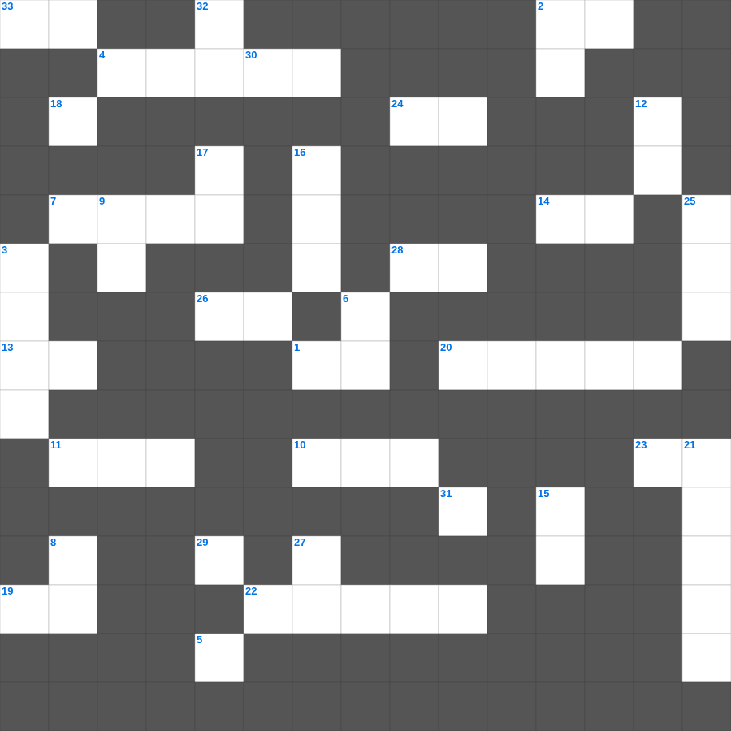

성경 교리 & 핵심 단어 마스터 100
📌 서비스 정의
십자가로세로는 교회 주보와 주일학교에서 사용할 수 있는 성경 기반 가로세로 퍼즐 서비스입니다. 성경 인물, 사건, 핵심 구절을 바탕으로 제작되었습니다. 온라인 풀이 및 인쇄 기능을 제공합니다.
성경를 주제로 한 성경 주일학교 퀴즈입니다. 35개의 단어를 맞춰보세요! 가로세로 낱말 퍼즐 형식으로 성경의 핵심 내용을 재미있게 복습할 수 있습니다.

📝 가로 힌트
1. 이제는 그의 육체의 죽음으로 말미암아 화목하게 하사 너희를 거룩하고 흠 없고 책망할 것이 없는 자로 그 앞에 이것 하고자 하셨으니
2. 다윗의 청을 거절했다가 죽은 어리석은 자
4. 백성들이 율법을 듣고 하루 중 4분의 1시간 동안 한 것
5. 시어머니를 끝까지 따른 모압 여인
7. 성벽 공사 중 '양문'을 건축한 사람들
10. 미디안을 물리치기 위해 부름받은 '큰 용사'
11. 룻기는 사사기의 혼란 속에서도 이것을 지킨 가정을 보여줌
13. 너희 기도로 내가 너희에게 나아갈 수 있기를 이것하노라
14. 베냐민 지파가 멸절 위기에서 아내를 얻은 장소
19. 태초부터 있는 이것의 말씀에 관하여는 우리가 들은 바요 눈으로 본 바요
20. 보아스는 엘리멜렉의 집안과 어떤 관계인가
22. 베드로전서 2장 11절: 영혼을 거슬러 싸우는 이것을 제어하라
23. 우리를 깨끗하게 하사 선한 일을 열심히 하는 자기 이것이 되게 하려 하심이라
24. 사울의 명으로 놉의 제사장 85명을 죽인 에돔 사람
26. 젊은 자들아 이와 같이 장로들에게 순종하고 다 서로 이것으로 허리를 동이라
28. 빌립보 감옥에서 매 맞고 갇힌 바울과 실라가 밤중에 한 일: 기도하고 하나님을 이것함
29. 형제들이 와서 네게 있는 진리를 증언하되 네가 진리 안에서 이것한다 하니 내가 심히 기뻐하노라
33. 오벳은 누구의 아버지인가
📝 세로 힌트
2. 벳새다 맹인을 고치실 때 처음 보인 것: 사람들이 이것들 같은 것들이 걸어가는 것을 보나이다
3. 베냐민 지파 남은 자 600명이 숨어 있던 곳
4. 예루살렘 멸망의 근본적인 원인
6. 여호사밧의 아들 여호람이 왕이 된 후 한 악행 '자기 이것들을 죽임'
8. 삼손이 나귀 턱뼈 하나로 죽인 사람 수
9. 믿음으로 말미암아 그리스도께서 너희 마음에 계시게 하시옵고 너희가 이것 가운데서 뿌리가 박히고 터가 굳어져서
12. 선진들이 이로써 이것을 얻었느니라
15. 만일 죽은 자가 다시 살아나는 일이 없으면 하나님이 그리스도를 다시 이것지도 아니하셨으리라
16. 편지를 받는 수신자: 우리의 사랑을 받는 자요 동역자인 이것
17. 그의 기쁘신 뜻대로 우리를 예정하사 예수 그리스도로 말미암아 자기의 이것들이 되게 하셨으니
18. 바다에서 나오는 한 짐승: 머리가 일곱이요 이것이 열이라
21. 백성들이 비를 맞으며 떨며 모였던 장소
25. 너희가 나가서 외양간에서 나온 이것 같이 뛰리라
27. 요한이서 1장 7절에서 부인하는 것: 예수 그리스도의 이것 강림
30. 악을 악으로, 욕을 욕으로 갚지 말고 도리어 이것을 빌라 이를 위하여 너희가 부르심을 받았으니
31. 갓난 아기들 같이 신령하고 순전한 이것을 사모하라
32. 삼손이 맨손으로 잡아 찢은 짐승
🧩 이 퍼즐에서 배우는 내용
이 퍼즐은 성경 교리 & 핵심 단어 마스터 100의 핵심 단어와 개념을 자연스럽게 복습할 수 있도록 구성되었습니다. 주일학교 수업이나 개인 성경공부에서 학습 내용을 점검하는 용도로 바로 활용할 수 있습니다.
🧑🏫 교회 교육 자료 활용
이 퍼즐은 주일학교 교재 추천 자료로 활용할 수 있고, 주일학교 주보에 넣기 좋은 분량으로 구성되어 있습니다. 수업용 주일학교 교안에 활동지로 붙이거나, 예배 후 복습용 주일학교 공과교재로 바로 사용할 수 있습니다.
🏷️ 키워드
성경 주일학교 퀴즈, 성경, 십자가로세로, 성경퀴즈, 말씀퀴즈, 가로세로퍼즐, 주일학교 교재 추천, 주일학교 주보, 주일학교 교안, 주일학교 공과교재